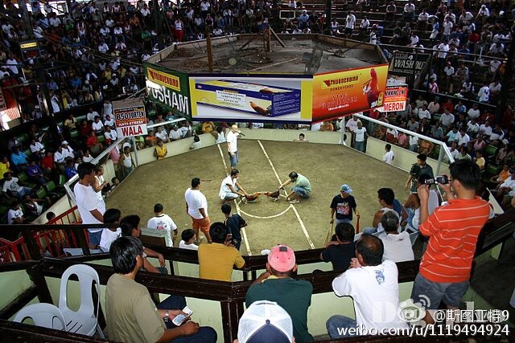

原来今天才出现史上第一个黑人女运动员赢得奥运会游泳金牌。

斯图亚特9
2016-08-11
斯图亚特9
2016-08-11
小学班主任不许我们用圆珠笔，必须用钢笔。养成习惯后中学也一直用钢笔，被同桌发现了之后嘲笑了一通，说他认识的用钢笔的字都特别好，我的字怎么这么差。现在喜欢用emacs而不是vi。有时候别人看到后会说哇你一定是个自定制狂+lisp牛人。其实我什么定制都不会，最开始用emacs是因为vi要打个i不爽……
斯图亚特9
2016-08-11
主流观点认为，斗鸡起源于公元前2000多年前的古印度，最晚公元前五世纪已经传到了中东，后来在欧洲也有流行，今天依然在拉丁美洲、东南亚等地非常流行，菲律宾还有斗鸡的庞大体育工业。斗鸡原来几百年前就是个全球化的运动，如同今天的足球一样。我之前还因为古籍上提到，以为是中国特色。
- 